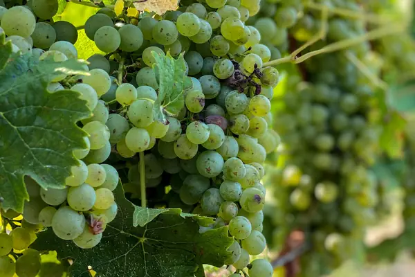

Riesling grape

Photo: Sophie Backes on Unsplash
Riesling is a white grape known for peach, lime, petrol, honey. Its best-known homes are Mosel, Alsace, Finger Lakes.
Origin and history
A German grape first recorded in 1435 at Rüsselsheim on the Rhine.
Where it grows
Mosel, Rheingau, Pfalz and Nahe in Germany, Alsace, Austria's Wachau, Clare and Eden Valley in Australia, the Finger Lakes and Washington State.
Structure
Light to medium body and very high acidity. Made in every style, from bone dry to intensely sweet.
Aromas, young and aged
Young: lime, lemon, green apple, white flowers and peach. With age: honey, toast and a typical petrol note.
Ageing
One of the longest-lived whites: good examples age 10–30 years, sweet ones even longer.
Also known as
Rhine Riesling, Weisser Riesling, Johannisberg Riesling.
Good to know
German Prädikat levels (Kabinett, Spätlese, Auslese, Beerenauslese, Trockenbeerenauslese) are based on grape ripeness at harvest.
Wine regions for Riesling
Riesling wines to try
Real bottles from The Wine Library.
Trimbach Riesling Clos Sainte Hune
Dry, intense Riesling: lime, white flowers and a long mineral finish.
Food: Sole, choucroute
Dr. Loosen Wehlener Sonnenuhr Riesling Kabinett
Mosel · Wehlener Sonnenuhr · Riesling
Light and off-dry: green apple, peach and racy slate acidity.
Food: Thai food, pork
Egon Müller Scharzhofberger Riesling Spätlese
Delicate and sweet: apricot, honey and electric acidity; ages for decades.
Food: Fruit desserts, blue cheese
Robert Weil Riesling Trocken
Dry Rheingau Riesling: lime, white peach and a crisp mineral finish.
Food: Trout, Asian dishes
Dr. Konstantin Frank Dry Riesling
Crisp and lively: lime, green apple, peach and a slaty finish.
Food: Oysters, Thai salads, pork
Domaine Rolly Gassmann Riesling
Ripe Alsace Riesling: citrus, peach and mineral length.
Food: Fish, choucroute
Domaines Schlumberger Riesling Grand Cru Clos Saint-Léger
Alsace · Alsace Grand Cru · Riesling
Grand cru Riesling from steep Guebwiller slopes: intense, mineral and age-worthy.
Food: Lobster, pork
Weingut Wieninger Wiener Riesling
Vienna · Wien · Riesling
Vienna Riesling: crisp, peachy and fresh.
Food: Fish, salads
Penfolds Bin 51 Riesling
Eden Valley Riesling: lime, blossom and steely acidity.
Food: Thai food, oysters
Grosset Springvale Riesling
Benchmark Clare Riesling: lime, talc and long dry finish.
Food: Asian dishes, seafood
Two Paddocks Picnic Riesling
Fresh, off-dry Central Otago Riesling: lime and apple.
Food: Spicy food, pork
Amalaya Torrontés Riesling
Salta (Cafayate) · Valles Calchaquíes · Torrontés, Riesling
High-altitude aromatic blend: flowers, citrus and freshness.
Food: Empanadas, Asian food
Weingut Leitz Eins Zwei Dry Riesling
Crisp green apple and lime with a slate-cool backbone; an easy-drinking dry Riesling that punches above its price.
Food: Thai green papaya salad
Weingut Prager Riesling Smaragd Achleiten
Ripe white peach and apricot over a stony, almost smoky core, with the weight of a Smaragd and a long, mineral finish.
Food: Roast chicken with tarragon cream
Hermann J. Wiemer Dry Riesling
Finger Lakes · Seneca Lake · Riesling
Lime zest, white flowers and wet stone, racy and precise, with only a whisper of residual sweetness.
Food: Smoked trout rillettes
Joh. Jos. Prüm Wehlener Sonnenuhr Riesling Spätlese
Feather-light and gently sweet, with peach, lime blossom and a smoky slate edge that sharpens with bottle age.
Food: Spicy Thai crab cakes, pork with apple
Georg Breuer Terra Montosa Riesling
Dry and stony Rheingau Riesling: grapefruit, white peach and a long, savoury mineral finish.
Food: Trout with almonds, sushi
Chateau Ste. Michelle & Dr. Loosen Eroica Riesling
Washington State · Columbia Valley · Riesling
Off-dry Washington Riesling: lime, apricot and jasmine with crisp, mouth-watering acidity.
Food: Pad thai, Vietnamese summer rolls
Similar white grapes
Explore all grapes in the interactive guide
The Wine Reference newsletter
New wines, stories and career guides, one email a week at most.
Over 18s only. Unsubscribe any time with one click. Your email is stored securely by Kit and never shared.
Support The Wine Reference
This guide is free, with no paywall. If it helped you choose a bottle, you can buy me a glass and keep it growing.
🍷 Buy me a glass